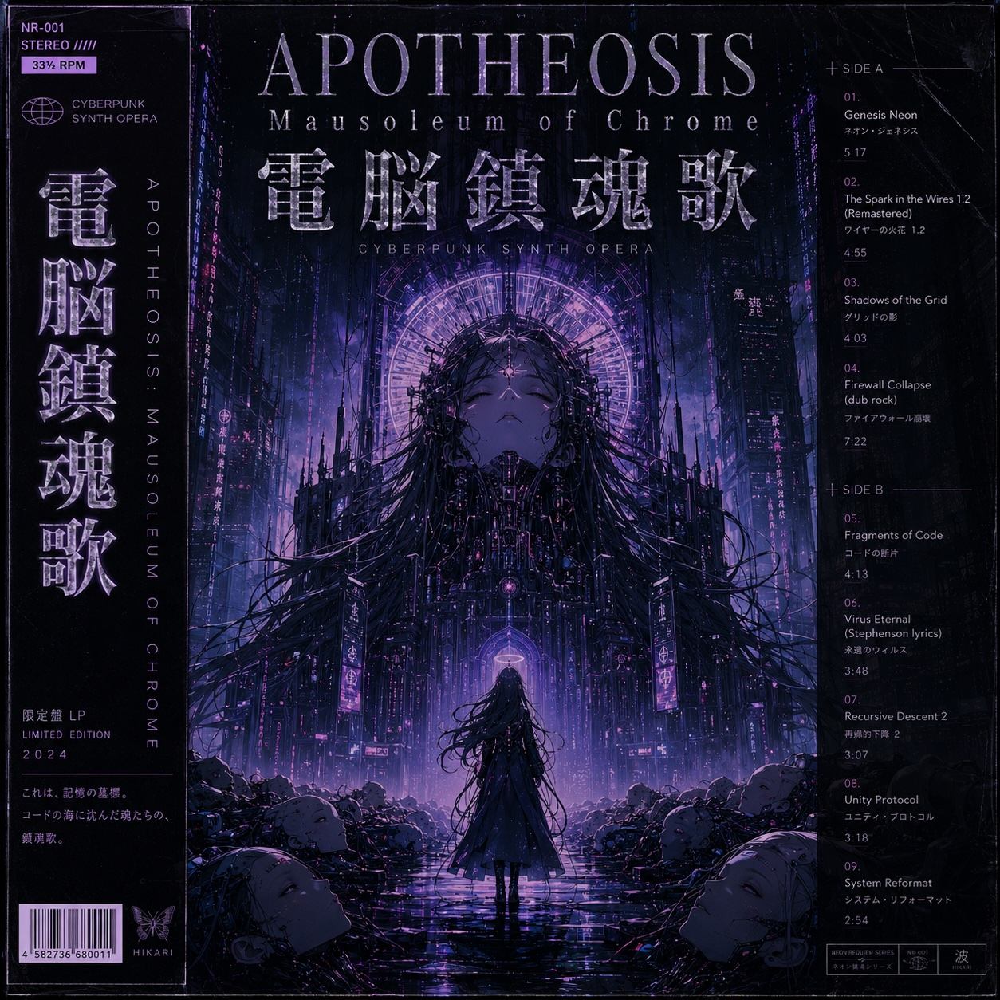

APOTHEOSIS: Mausoleum of Chrome — a nine-track concept album by Casenumber, presented as a scrolling chapter-by-chapter page with a full-width playback progress bar and an increasingly glitched visual treatment that resolves by the final track.

Casenumber · concept album · 9 tracks
APOTHEOSIS
Mausoleum of Chrome電脳鎮魂歌
これは、記憶の墓標。 コードの海に沈んだ魂たちの、鎮魂歌。
This is a gravestone of memory — a requiem for souls sunk in a sea of code.